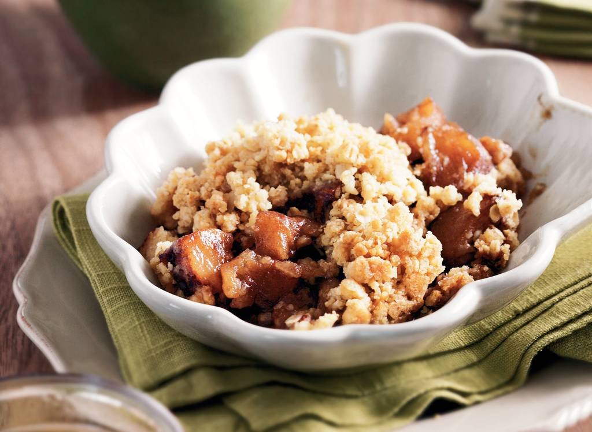

Ga terug naar het hoofdgerecht
Appelkruimeltoetje
Zacht, zoete appel met een krokant laagje uit de oven. Heerlijk herfsttoetje.
Ingredienten
- 1kg Goudreinette appel
- 2 tl kaneelpoeder
- 75g donkere bastardsuiker
- 150g tarwebloem
- 150g rietsuiker
- 50g havermout
- 1 mespunt zout
- 150g ongezouten roomboter
Bereidingswijze
- Verwarm de oven voor op 200 graden celsius. Vet de ovenschaal in.Schil de appels, verwijder het klokhuis
en snijd in stukjes.
- SChep in een kom de appel om met kaneel en bastardsuiker. Verdeel de appelstukjes over de bodem van de
ovenschaal.
- Meng in een kom de bloem, rietsuiker, havermout en het zout. Snijd de boter in kleine blokjes en leg op
het bloemmengsel.
- Kneed met koele handen snel tot een kruimelig deeg.
- Strooi het kruimeldeeg over de appelstukjes.
- Zet de ovenschaal in het midden van de oven en bak ca. 30min. Tot de appel zacht en de kruimellaag
goudbruin is.

Tip Lekker met vanillevla.